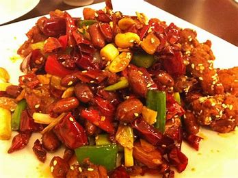
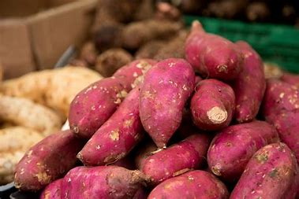
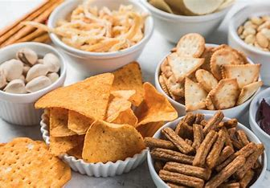
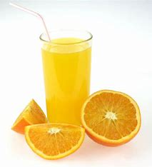
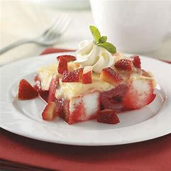
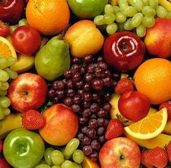
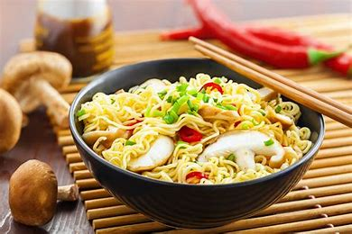
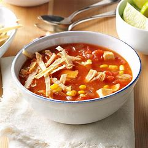
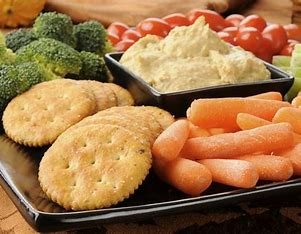
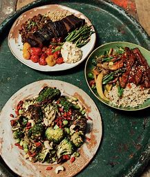

TOP TEN FOOD
SPICY

Rista Rista is a mouth-wateringly spicy dish from the land of Kashmir
It is made of red meat, which is usually sourced from the leg
SWEET

Starting with the most savored dish is ‘aamras’. Aamras is a sweet dish that is made from extracting the pulp from the fruit, Mango.
Being a tropical and seasonal fruit it comes once a year
and brings delight, and leaves everyone smacking their lips
SALT
>

WebSalty From Rs. 799.00 Sale Hyacinth 4-pcs Zircon Heart Magnetic Clover Necklace -
Rose Gold Salty Rs. 649.00 Rs. 369.00 Sale Lavish Lavender Birthday Jewellery Gift Box for Her Salty Rs. 2,499.00
Rs. 1,799.00 Sale Silver Hug Promise Ring -
JUICE

Juice is a drink made from the extraction or pressing of the natural liquid contained in fruit and vegetables.
It can also refer to liquids that are flavored with concentrate or other biological food sources,
such as meat or seafood, such as clam juice
DESSERT

Kakadiche Sandan. 40 mins. Eggless Red Velvet Cake - Valentine's Day. 45 mins. Fantakuchen:
German Cake With Fanta. 35 mins. 2-Min Chocolate Mug Cake
Easy Dessert Recipes: Stressed spelled backwards is dessert -Coincidence?
We think not! A little bit of sugar goes a long way and our 1
FRUIT

Fruit, the fleshy or dry ripened ovary of a flowering plant, enclosing the seed or seeds.
The principal purpose of the fruit is the …
NOODLES

Stir Fry Udon Noodle With Black Pepper Sauce. Udon noodles
are cooked with a blast of flavours. Bell peppers, mock duck and
SOUP

Vegetable Soup Recipes: Find here a list of 13 best vegetarian soup
recipes like radish soup with tofu miso cream, basil tomato soup,
SNACKS

hese Indian snacks recipes include all kind of snacks items like Bread, Paneer or Potato with video, pictures and
step by step cooking method. Find here snacks recipes that are …
MEALS

Making a stir-fry with ingredients you already have is an easy way to put a healthy meal
on the table fast. Stir-fries typically consist of protein, non-starchy veggies, and a carbohydrate, such as rice or noodles
Therefore, they’re balancedmeals that will keep you full. Heat a drizzle of oil in a large s